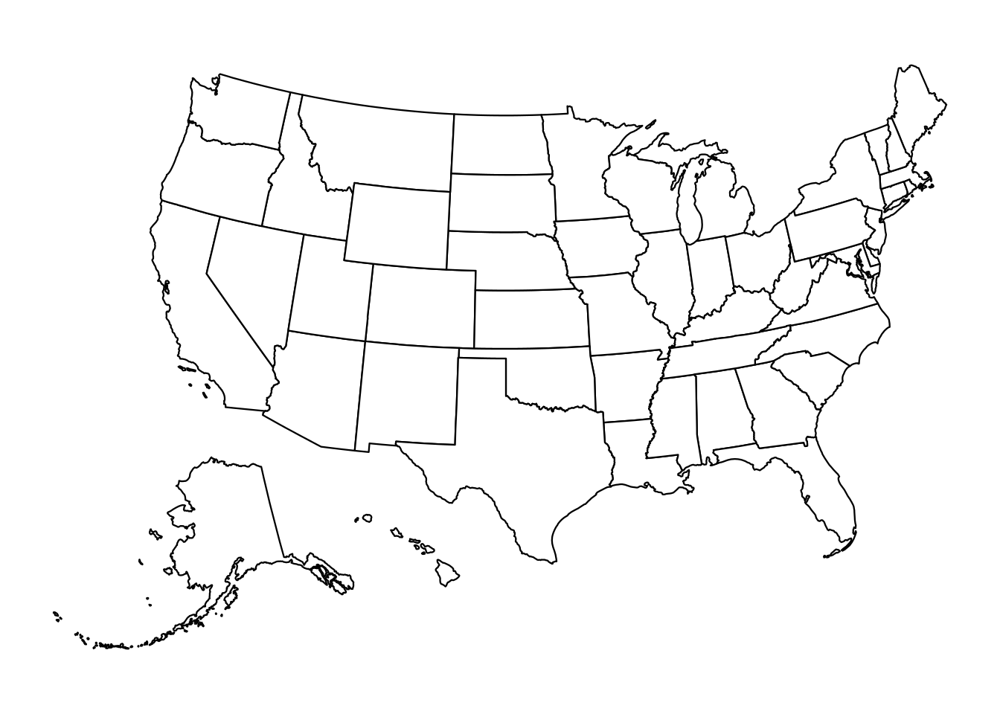
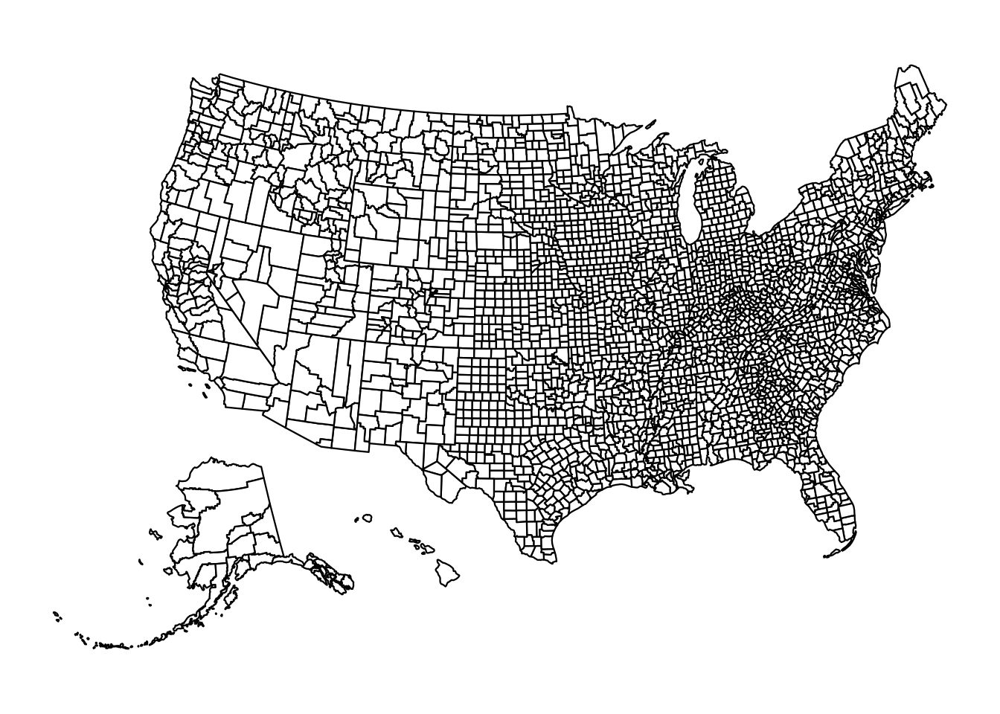
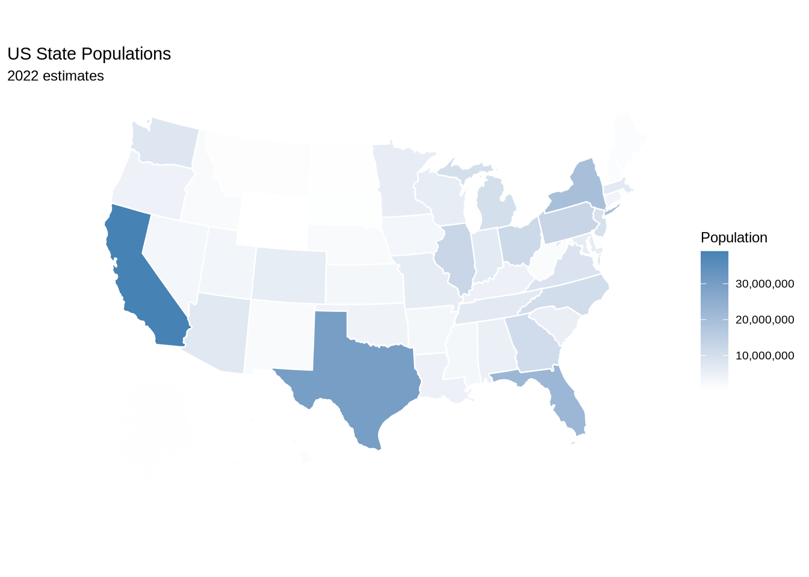
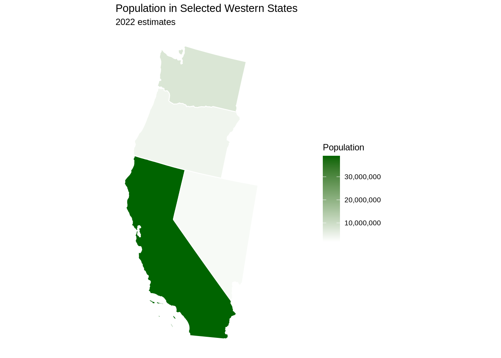
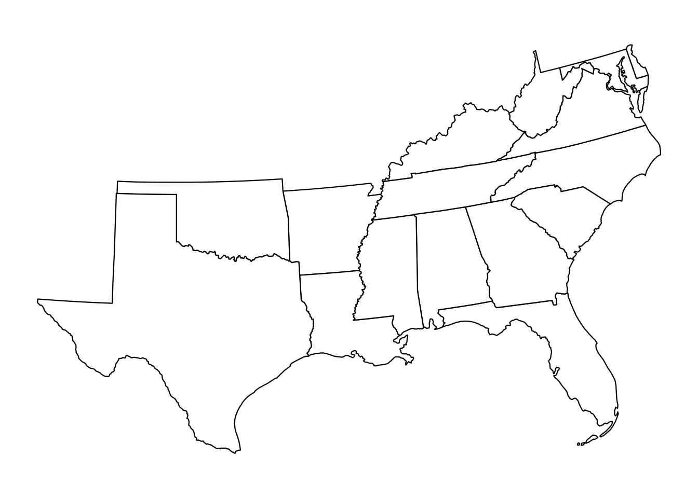
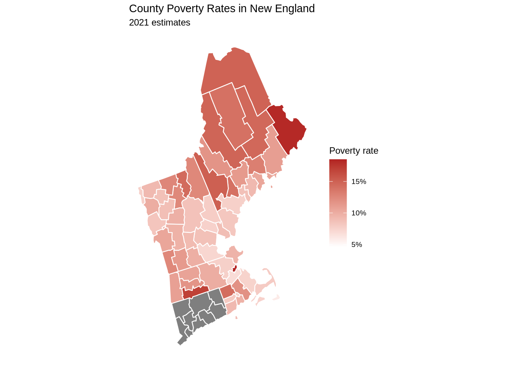
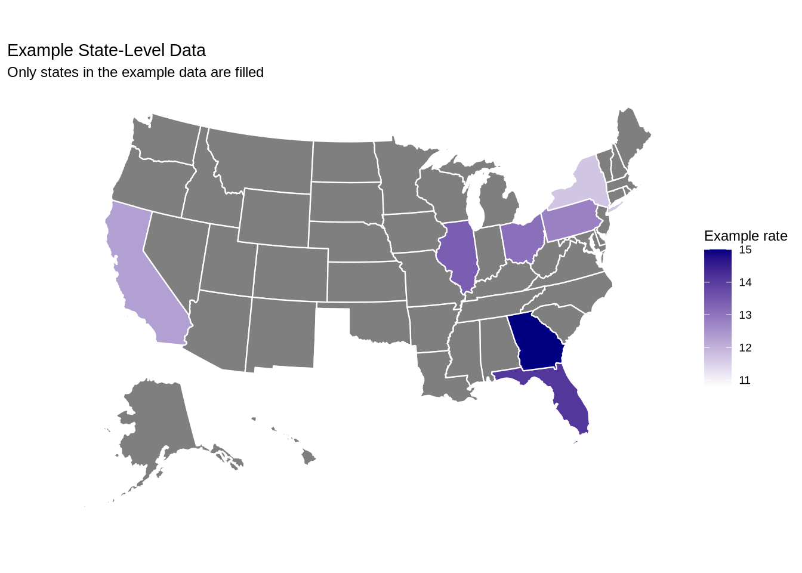
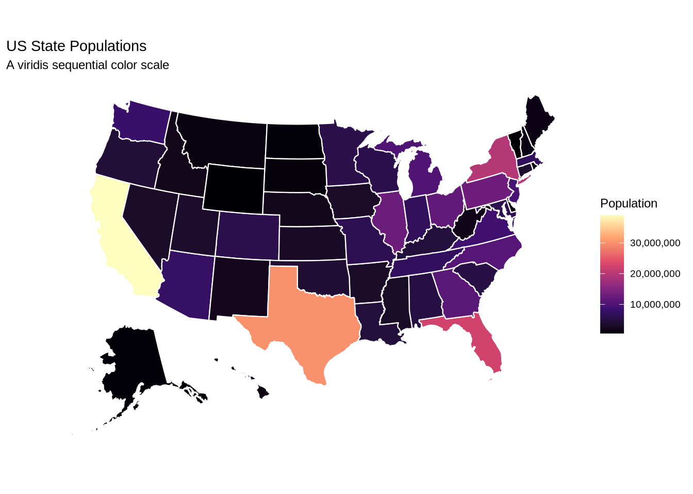

library(tidyverse)
library(usmap)
library(ggplot2)12 Mapping
US maps, FIPS codes, choropleths, and optional spatial extensions
Maps are useful when geography is part of the question. They are not automatically better than tables or charts. Use a map when location, region, distance, or spatial clustering matters.
This chapter covers usmap for United States maps and tmap for world maps. The extras introduce tidycensus for Census data and statebins for equal-area tile maps. Lower-level spatial tools (sf, rnaturalearth, leaflet) are in the companion experiment file.
12.1 A blank US map
plot_usmap() creates a map with very little code.
plot_usmap()
The package handles the map geometry and projection for us. This is a good first tool when the goal is a United States state or county map.
12.2 State and county maps
The default map shows states. County maps use regions = "counties".
plot_usmap(regions = "counties")
County maps contain many small shapes. They can be useful, but they can also become visually busy. Use county maps when county-level variation is central to the question.
12.3 Understanding map data
Map packages store geometry data in data frames. us_map() lets us inspect the data that usmap uses.
states_df <- usmap::us_map()
counties_df <- usmap::us_map(regions = "counties")
states_df |>
sf::st_drop_geometry() |>
slice_sample(n = 10)counties_df |>
sf::st_drop_geometry() |>
slice_sample(n = 10)The key variables include state names, abbreviations, and FIPS codes.
12.4 FIPS codes
FIPS codes are standardized geographic identifiers. State FIPS codes have two digits. County FIPS codes have five digits: two for the state and three for the county.
fips(state = "Massachusetts")[1] "25"fips_info(c("25", "26", "27"))County FIPS lookups work the same way.
fips_info(c("25025", "26163", "27053"))FIPS codes matter because many government and social science datasets use them as join keys. A map will not know that “Massachusetts”, “MA”, and "25" refer to the same place unless you create a common identifier.
12.5 A state choropleth
A choropleth map fills geographic units by a data value. usmap includes a state population dataset.
data(statepop, package = "usmap")
statepop |>
select(full, abbr, fips, pop_2022) |>
slice_head(n = 8)Now map 2022 population.
plot_usmap(data = statepop, values = "pop_2022", color = "white") +
scale_fill_continuous(
low = "white",
high = "steelblue",
name = "Population",
labels = scales::comma
) +
labs(
title = "US State Populations",
subtitle = "2022 estimates"
) +
theme(legend.position = "right")
Population maps often emphasize large states. That may be the point, but it may also hide other patterns. Always ask whether the mapped value should be a total, a rate, a percentage, or a change.
12.6 Focused regional maps
The include argument limits the map to selected states.
plot_usmap(
data = statepop,
values = "pop_2022",
include = c("CA", "ID", "NV", "OR", "WA"),
color = "white"
) +
scale_fill_continuous(
low = "white",
high = "darkgreen",
name = "Population",
labels = scales::comma
) +
labs(
title = "Population in Selected Western States",
subtitle = "2022 estimates"
) +
theme(legend.position = "right")
usmap also has predefined region objects.
plot_usmap(include = .south_region)
You can combine inclusion and exclusion.
plot_usmap(include = .south_region, exclude = .east_south_central)
12.7 County choropleths
usmap includes county poverty data.
data(countypov, package = "usmap")
countypov |>
select(fips, abbr, county, pct_pov_2021) |>
slice_head(n = 8)County maps require regions = "counties".
plot_usmap(
data = countypov,
values = "pct_pov_2021",
regions = "counties",
include = c("CT", "ME", "MA", "NH", "RI", "VT"),
color = "white",
size = 0.1
) +
scale_fill_continuous(
low = "white",
high = "firebrick",
name = "Poverty rate",
labels = scales::label_percent(scale = 1)
) +
labs(
title = "County Poverty Rates in New England",
subtitle = "2021 estimates"
) +
theme(legend.position = "right")
County maps work best when the color scale and the legend are easy to read. Thin borders and focused regions can help.
12.8 Joining your own data
Most mapping projects follow the same pattern:
- Get a data frame with a geographic identifier such as a state abbreviation or FIPS code.
- Clean the identifier so it matches the map data.
- Join or pass the data to a mapping function.
- Choose a color scale and labels that match the substance of the variable.
Here is a small state-level example.
state_example <- tibble(
state = c("CA", "TX", "FL", "NY", "IL", "PA", "OH", "GA"),
example_rate = c(12.3, 10.8, 14.1, 11.7, 13.4, 12.8, 13.1, 15.0)
)
state_exampleplot_usmap() can use state abbreviations directly when the data have a state column.
plot_usmap(data = state_example, values = "example_rate", color = "white") +
scale_fill_continuous(
low = "white",
high = "navy",
name = "Example rate"
) +
labs(
title = "Example State-Level Data",
subtitle = "Only states in the example data are filled"
) +
theme(legend.position = "right")
For county data, make sure FIPS codes remain character strings. Do not let leading zeroes disappear.
county_example <- tibble(
fips = c("25025", "26163", "17031"),
value = c(41, 38, 44)
)
county_example12.9 Choosing map colors
Sequential color scales work well for ordered values such as population, income, or percentages. viridis scales are a good default because they are readable and colorblind-friendlier than many rainbow palettes.
plot_usmap(data = statepop, values = "pop_2022", color = "white") +
scale_fill_viridis_c(
option = "magma",
name = "Population",
labels = scales::comma
) +
labs(
title = "US State Populations",
subtitle = "A viridis sequential color scale"
) +
theme(legend.position = "right")
Use diverging color scales when the variable has a meaningful midpoint, such as change around zero or an index centered at an average.
12.10 Short exercise
Use statepop.
- Make a state population map with a different sequential color scale.
- Focus the map on one region or a custom set of states.
- Change the title, subtitle, and legend title.
- Write one sentence explaining whether a map is better than a sorted bar chart for this variable.
12.11 Extra: ACS data with tidycensus
The tidycensus package can download American Community Survey data. This is optional because it may require a Census API key and internet access.
library(tidycensus)
county_income <- get_acs(
geography = "county",
variables = "B19013_001",
year = 2022,
geometry = FALSE
) |>
transmute(
fips = GEOID,
income = estimate
)
plot_usmap(
data = county_income,
values = "income",
regions = "counties",
include = .midwest_region,
color = "white",
size = 0.1
) +
scale_fill_viridis_c(
name = "Median household income",
labels = scales::dollar
) +
labs(
title = "Median Household Income by County",
subtitle = "ACS estimates"
) +
theme(legend.position = "right")This workflow is useful for public policy, sociology, political science, and demography projects because Census data use standard geographic identifiers.
12.12 Extra: equal-area state tile maps with statebins
Traditional maps give more visual space to geographically large states. A tile map gives every state the same visual size.
library(statebins)
USArrests |>
rownames_to_column("state") |>
statebins(value_col = "Assault", name = "Assault", round = TRUE) +
theme_statebins(legend_position = "right") +
labs(title = "Assault Arrests by State")State bins are not geographically precise, but they are useful when equal visual weight is more important than exact shape.
12.13 Extra: world maps with tmap
The tmap package is built specifically for thematic maps. Its grammar resembles ggplot2 — you start with a shape layer and add styled layers on top — but the defaults are tuned for cartography: sensible projections, automatic legends, and built-in support for switching between static and interactive maps with a single line.
tmap ships with a World dataset (an sf object covering 177 countries with indicators like population, life expectancy, and GDP per capita). That makes it a good entry point for country-level visualization without separately loading natural-earth data.
library(tmap)
library(sf)
data(World)
tmap_mode("plot") # static maps
tm_shape(World) +
tm_polygons(fill = "life_exp", fill.scale = tm_scale_continuous(values = "viridis")) +
tm_title("Life Expectancy by Country") +
tm_layout(legend.outside = TRUE)tm_shape() declares the geometry. tm_polygons() fills the countries by a variable. tm_scale_continuous() controls the color ramp. The structure parallels ggplot() + geom_sf() + scale_fill_*(), but the components are map-specific.
A categorical fill works the same way.
tm_shape(World) +
tm_polygons(
fill = "continent",
fill.scale = tm_scale_categorical(values = "brewer.set3")
) +
tm_title("Countries by Continent") +
tm_layout(legend.outside = TRUE)World maps benefit from a thoughtful projection. The default Mercator-style projection inflates high latitudes; Equal Earth (EPSG:8857) preserves area, which is usually what you want for global comparisons.
World_ea <- st_transform(World, crs = "+proj=eqearth")
tm_shape(World_ea) +
tm_polygons(
fill = "gdp_cap_est",
fill.scale = tm_scale_continuous(values = "plasma"),
fill.legend = tm_legend(title = "GDP per capita")
) +
tm_title("GDP Per Capita on an Equal-Earth Projection") +
tm_layout(legend.outside = TRUE)tmap can also switch into interactive mode with one line. The same map code is reused; the renderer changes.
tmap_mode("view") # interactive
tm_shape(World) +
tm_polygons(
fill = "life_exp",
fill.scale = tm_scale_continuous(values = "viridis"),
popup.vars = c("Country" = "name", "Life expectancy" = "life_exp", "GDP/capita" = "gdp_cap_est")
)
tmap_mode("plot") # switch backThat dual-mode behavior is the main reason to use tmap over plain ggplot2 + geom_sf for world maps. The same syntax produces a static figure for a paper and an interactive map for a webpage. You can also join your own country-level data to World by iso_a3 (a three-letter country code) and map any variable that way.
12.13.1 Zooming into a region
To show a specific continent, filter the World sf object before passing it to tm_shape(). This removes all other countries from the frame entirely.
# Russia spans the antimeridian (full globe width) and France includes French
# Guiana (far southwest). Excluding Russia and cropping to the European extent
# keeps the map focused on the European landmass.
europe <- World[World$continent == "Europe" & World$name != "Russia", ] |>
sf::st_crop(xmin = -25, ymin = 34, xmax = 45, ymax = 72)
tm_shape(europe) +
tm_polygons(
fill = "gdp_cap_est",
fill.scale = tm_scale_continuous(values = "plasma"),
fill.legend = tm_legend(title = "GDP per capita")
) +
tm_text("name", size = 0.45) +
tm_crs("auto") +
tm_title("GDP Per Capita in Europe") +
tm_layout(legend.outside = TRUE)tm_crs("auto") lets tmap choose a suitable projection for the region — for Europe it typically selects something like ETRS89-LAEA, which minimises distortion at European latitudes. tm_text() adds country name labels; keep size small for regions with many small countries.
The same pattern works for any continent. Replace "Europe" with "Africa", "Asia", "South America", or "North America".
africa <- World[World$continent == "Africa", ]
tm_shape(africa) +
tm_polygons(
fill = "well_being",
fill.scale = tm_scale_continuous(values = "brewer.yl_or_rd"),
fill.legend = tm_legend(title = "Well-being index")
) +
tm_crs("auto") +
tm_title("Well-Being Index in Africa") +
tm_layout(legend.outside = TRUE)